Hello, and welcome to my portfolio.
I am an iOS Software Engineer with 5+ years of experience building native iOS applications, reusable SDKs, indoor navigation solutions, parking payment management systems, fintech applications with blockchain integration, and engaging user interfaces. I specialize in developing high-quality iOS experiences using Swift and Objective-C.
Projects
LuckyParking
Smart parking management and payment app available on the App Store, currently being optimized with ongoing API integration.
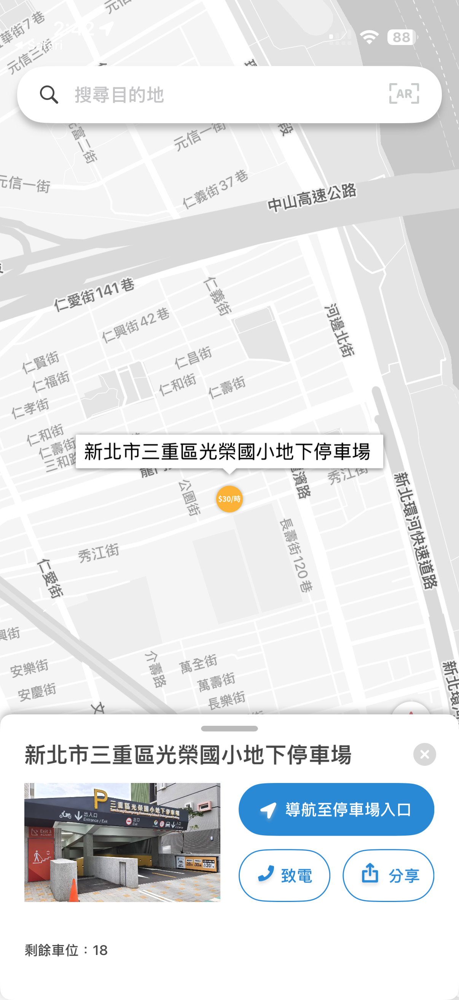
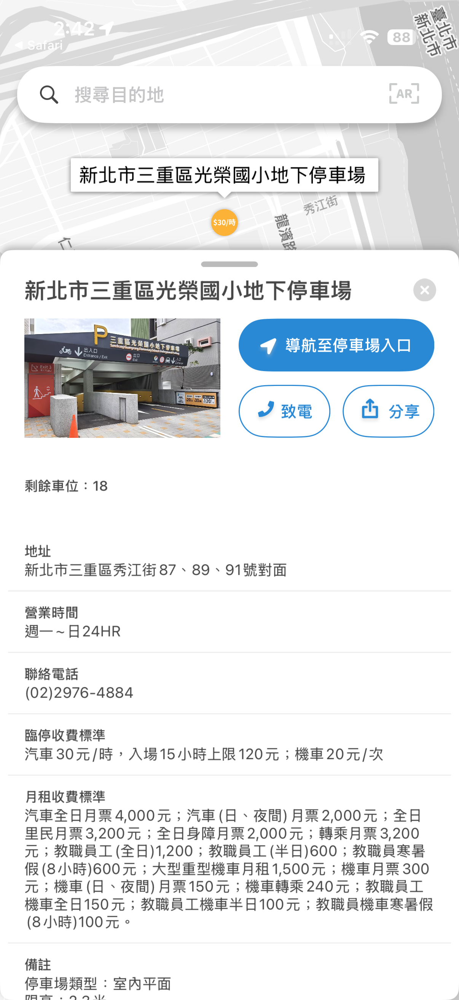
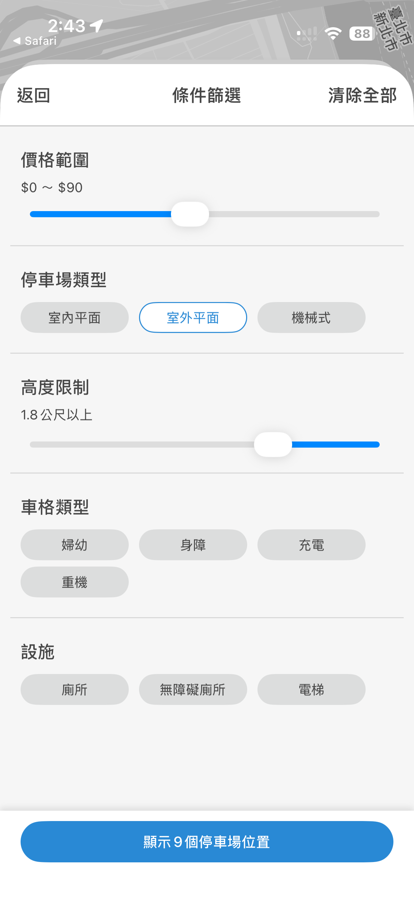
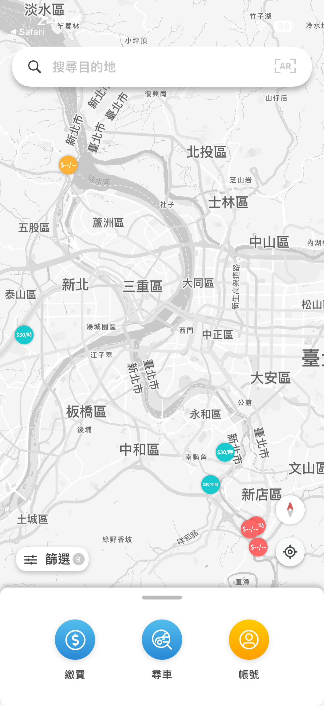
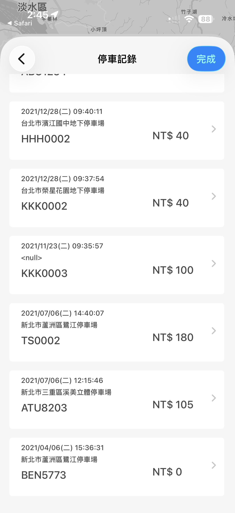
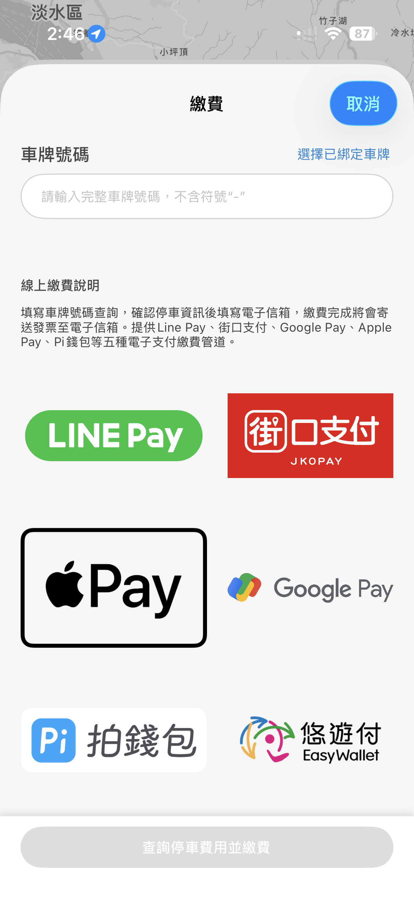
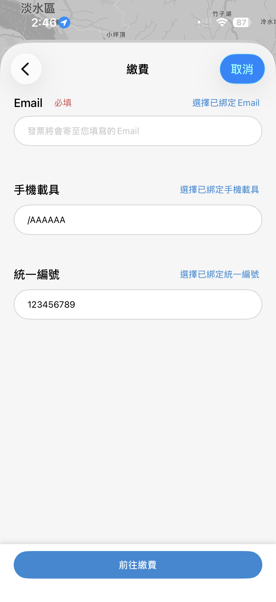
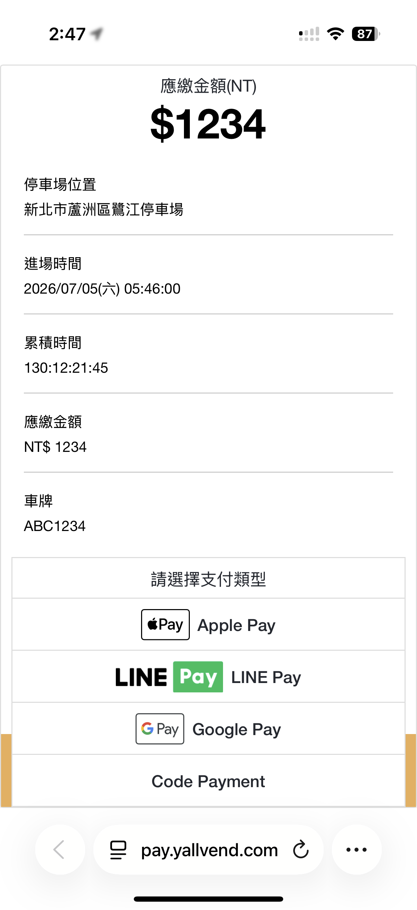
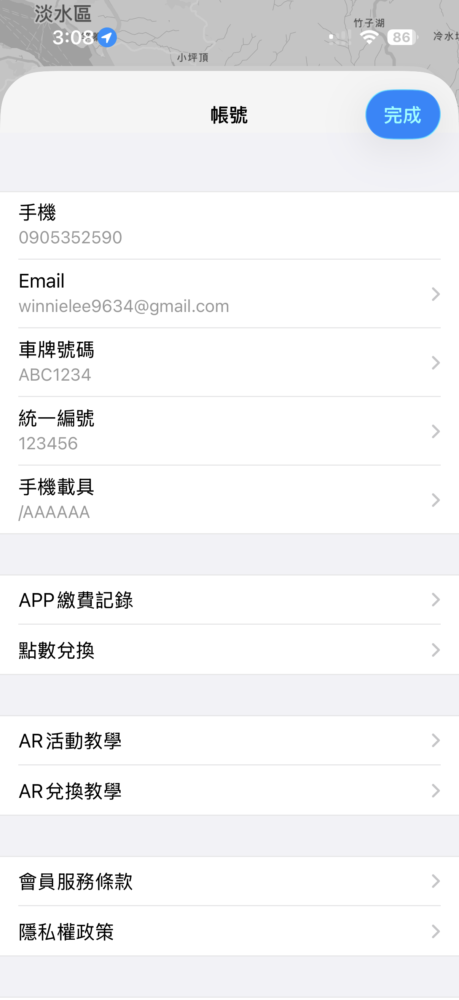
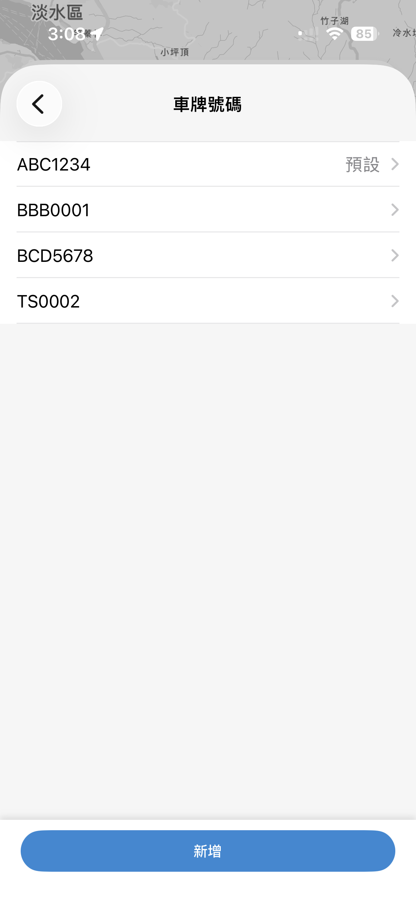
Applied Technologies
Screenshots 1-2
Implemented Google Maps with custom pins and parking information from server-side JSON. Decoded API responses and updated the UI asynchronously with DispatchQueue. Image loading also runs asynchronously to prevent UI blocking, and an animated scroll-up card improves the user experience.
Screenshots 3-4
Stored JSON data returned from the server and used a hashmap-based approach to implement filtering logic, then updated the UI.
Screenshot 5
Built parking records in a compact card layout. Stored JSON response data locally and reused local data on the next launch to reduce unnecessary API calls.
Screenshot 6
Built the payment page with asynchronous image loading to prevent UI blocking and improve the user experience. Added encrypted local storage for user information and real-time server updates.
Screenshot 7
Built the payment detail input page with a preserved ViewController stack, allowing users to return to the previous page with a direct pop operation. Input values can be saved to the account file and reused as defaults on the next payment flow, reducing repeated user input while still allowing users to choose whether to save the information as default.
Screenshot 8
Implemented the external web payment flow by reading WebKit responses and handling the return path back into the app, reopening the app and navigating users to the correct ViewController after payment.
Screenshots 9-10
Built the account management pages with locally stored profile data to avoid excessive API calls. Server updates are triggered only after each edit, so the API can sync changed data back to the server. The flow supports storing multiple license plate numbers and selecting a default plate for the next payment. Email, tax ID, and carrier information follow the same local storage and selective sync approach.
Hanshin Parking SDK
Client-requested SDK focused only on indoor map navigation and route display features.
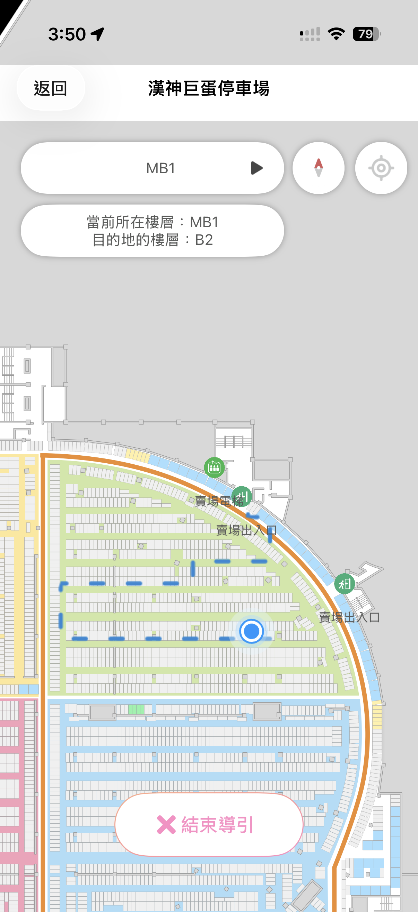
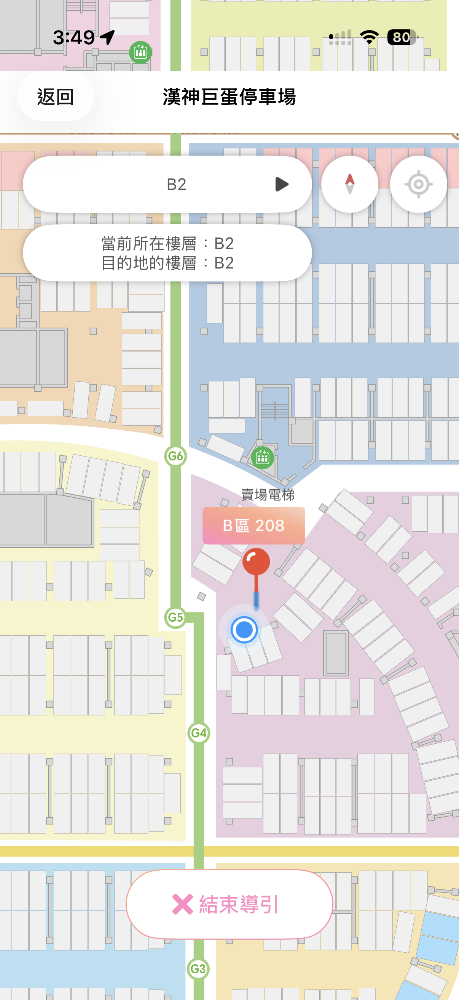
Applied Technologies
Screen shot 1
Presented the search result view after the SDK loaded search data. The blue line is an offline-generated route returned from IPSSDK. I decoded the returned data, generated the route, and displayed it in the UI.
Screen shot 2
Displayed the current location and destination pins on a zoomed indoor parking map, with the blue line representing the navigation route between the two points. Implemented automatic floor switching, automatic location following, and automatic navigation-end detection.
ShouShanZoo App
Built map-based user experiences and event-related features for a zoo outdoor navigating application.
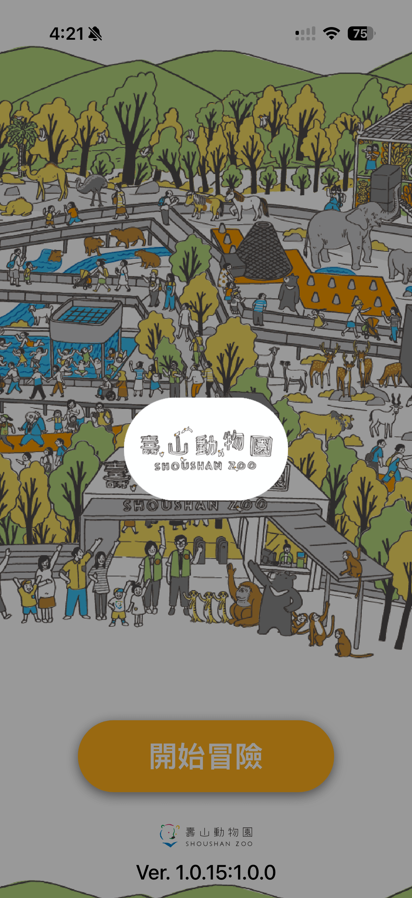
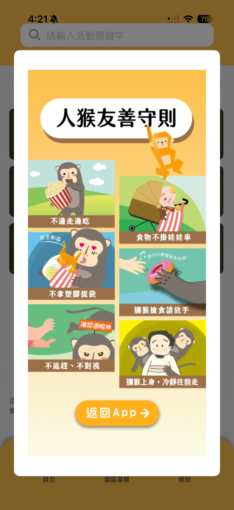
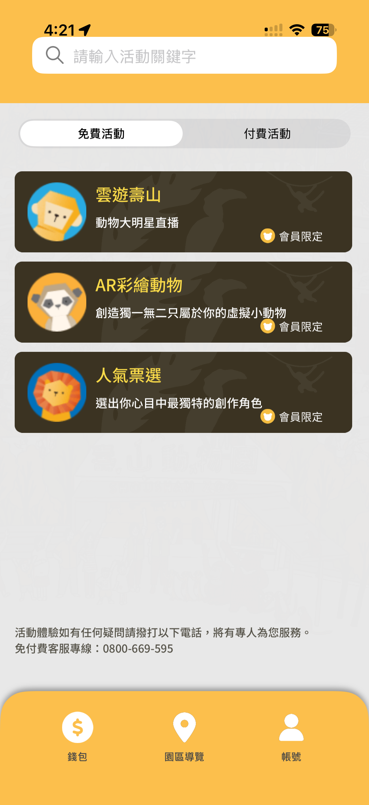
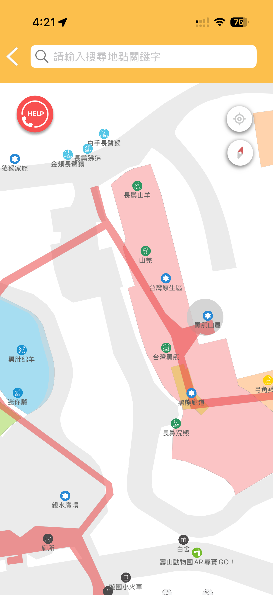
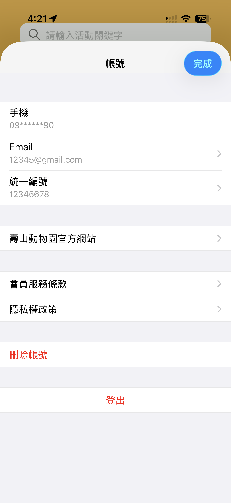
Applied Technologies
Screenshots 1-2
Built the loading flow to verify network availability before the app continues. If no network connection is available, the app shows a no-network prompt. The popup in screenshot 2 displays subscription content received through push notification.
Screenshot 3
Built the activity page with web-based interactions. Commands from the web content are passed back to the app through WebKit.
Screenshot 4
Built the outdoor navigation map and generated routes when location status is available.
Screenshot 5
Built the personal account page with encrypted data storage for saved user information.
Skills
- Swift
- Objective-C
- UIKit
- SwiftUI
- MapKit
- Google Maps SDK
- CoreLocation
- WebKit
- URLSession
- REST APIs
- JSON Decoding
- DispatchQueue
- Asynchronous Image Loading
- Push Notifications
- Local Data Persistence
- Encrypted Local Storage
- SDK Development
- Indoor Navigation
- Outdoor Navigation
- Route Rendering
- API Integration
- Git
- MVVM
Contact
Email: winnielee9634@gmail.com
LinkedIn: linkedin.com/in/winnie-lee-88627416b